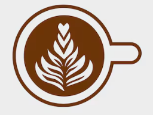

Mais pedido
Nosso cardápio
Do espresso puro ao café com essência, cada bebida tem sua própria receita — e um tijolinho de história.
Ver cardápio completoTorra artesanal, feita devagar
Construímos essa casa café a café — grãos selecionados, torra lenta e o cuidado de quem gosta de servir bem.
Comece por aqui

Do espresso puro ao café com essência, cada bebida tem sua própria receita — e um tijolinho de história.
Ver cardápio completoA história da torra, da vizinhança e das mãos por trás de cada xícara que sai do balcão.
Conhecer a históriaDúvidas, encomendas ou só um oi. Respondemos rápido — sem enrolação, com café por perto.
Enviar mensagem